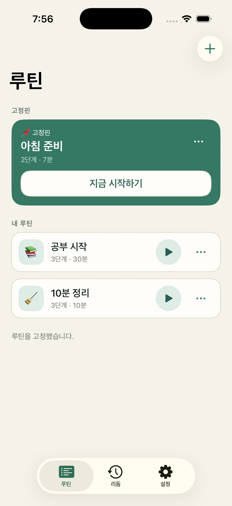
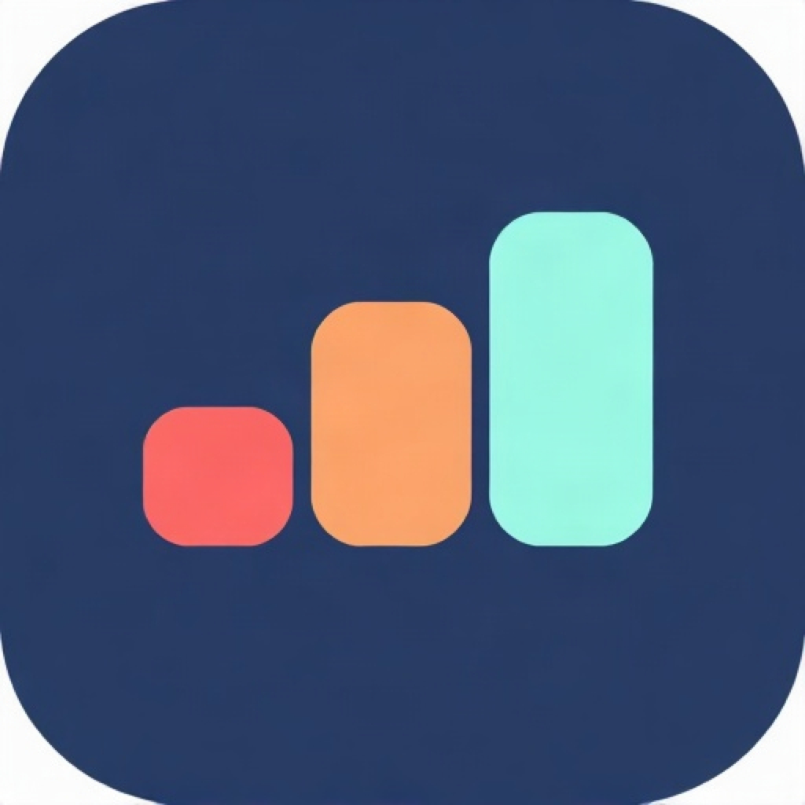
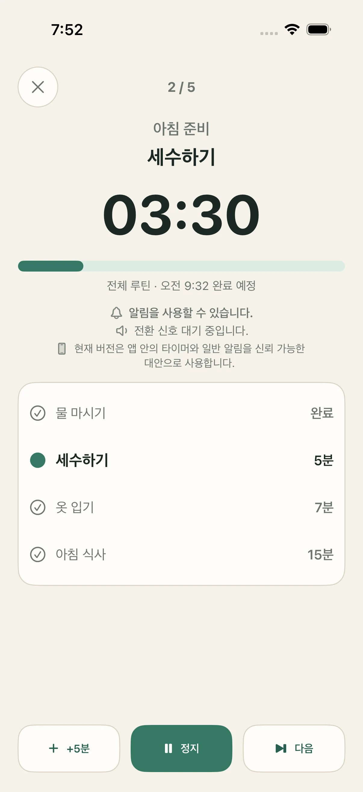
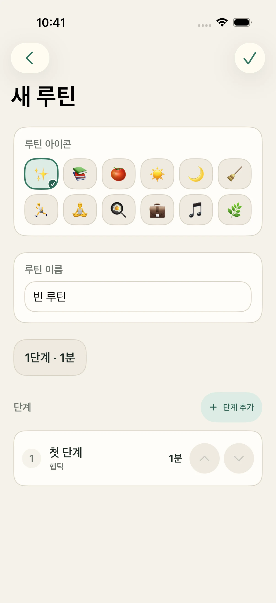
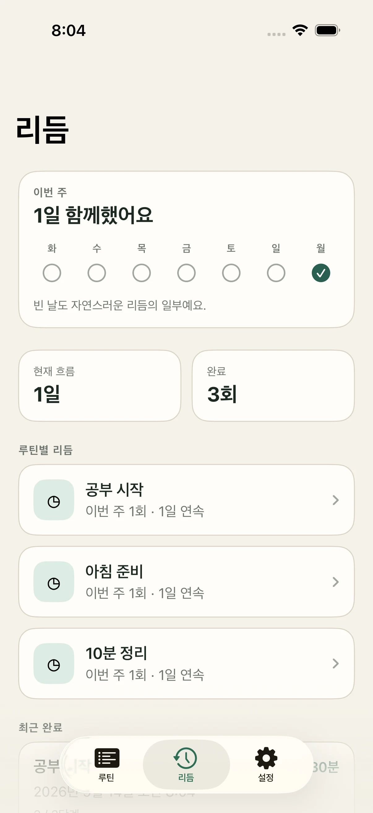

01
루틴에서 시작
아침, 공부, 청소, 운동 루틴을 한곳에 모으고 자주 쓰는 루틴을 고정하세요.


StepCue차분한 루틴 타이머
매일의 루틴을 명확한 시간 단계로 만드세요. 지금 할 일, 다음 단계, 예상 종료 시각을 한눈에 확인할 수 있습니다.

하나의 루틴, 선명한 흐름
한 번 순서를 만들면 StepCue가 전체 루틴을 보기 쉽고 따라가기 편하게 유지합니다.
아침, 공부, 청소, 운동 루틴을 한곳에 모으고 자주 쓰는 루틴을 고정하세요.

단계 이름과 시간을 정하고 나에게 맞는 순서로 배치하세요.

평가 없이 돌아보세요. 최근 완료 기록과 꾸준히 이어온 루틴을 확인할 수 있습니다.

신뢰를 위한 설계